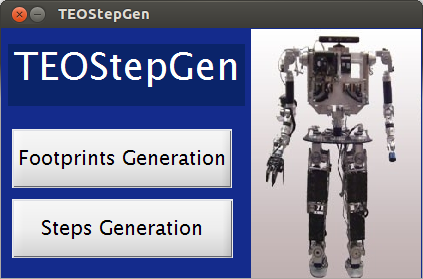

TEOStepGen
TEOStepGen (TEO Step Generator)
function varargout = TEOStepGen(varargin) % TEOStepGen MATLAB code for TEOStepGen.fig % TEOStepGen, by itself, creates a new TEOStepGen or raises the existing % singleton*. % % H = TEOStepGen returns the handle to a new TEOStepGen or the handle to % the existing singleton*. % % TEOStepGen('CALLBACK',hObject,eventData,handles,...) calls the local % function named CALLBACK in TEOStepGen.M with the given input arguments. % % TEOStepGen('Property','Value',...) creates a new TEOStepGen or raises the % existing singleton*. Starting from the left, property value pairs are % applied to the GUI before TEOStepGen_OpeningFcn gets called. An % unrecognized property name or invalid value makes property application % stop. All inputs are passed to TEOStepGen_OpeningFcn via varargin. % % *See GUI Options on GUIDE's Tools menu. Choose "GUI allows only one % instance to run (singleton)". % % See also: GUIDE, GUIDATA, GUIHANDLES % Edit the above text to modify the response to help TEOStepGen % Last Modified by GUIDE v2.5 18-Apr-2014 18:47:50 % Begin initialization code - DO NOT EDIT gui_Singleton = 1; gui_State = struct('gui_Name', mfilename, ... 'gui_Singleton', gui_Singleton, ... 'gui_OpeningFcn', @TEOStepGen_OpeningFcn, ... 'gui_OutputFcn', @TEOStepGen_OutputFcn, ... 'gui_LayoutFcn', [] , ... 'gui_Callback', []); if nargin && ischar(varargin{1}) gui_State.gui_Callback = str2func(varargin{1}); end if nargout [varargout{1:nargout}] = gui_mainfcn(gui_State, varargin{:}); else gui_mainfcn(gui_State, varargin{:}); end % End initialization code - DO NOT EDIT % --- Executes just before TEOStepGen is made visible. function TEOStepGen_OpeningFcn(hObject, eventdata, handles, varargin) handles.output = hObject; %-------------------------------------------------------------------------- % To put screen correctly scrsz = get(0,'ScreenSize'); pos_act = get(gcf,'Position'); xr = scrsz(3) - pos_act(3); xp = round(xr/2); yr = scrsz(4) - pos_act(4); yp = round(yr/2); set(gcf,'Position',[xp yp pos_act(3) pos_act(4)]); % to chargue main image 'portada.jpg' axes(handles.axes1) [r,map] = imread('teo_photo2.jpg','jpg'); image(r);colormap(map);axis off % Update handles structure guidata(hObject, handles); % --- Outputs from this function are returned to the command line. function varargout = TEOStepGen_OutputFcn(hObject, eventdata, handles) varargout{1} = handles.output; % --- Executes on button press in steps_generation_button. function steps_generation_button_Callback(hObject, eventdata, handles) steps_control close TEOStepGen function button_footprints_generation_Callback(hObject, eventdata, handles) footprint_generation close TEOStepGen